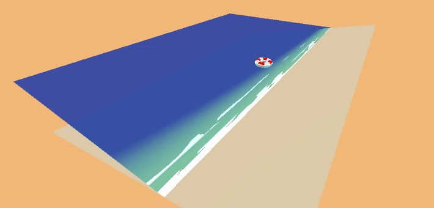
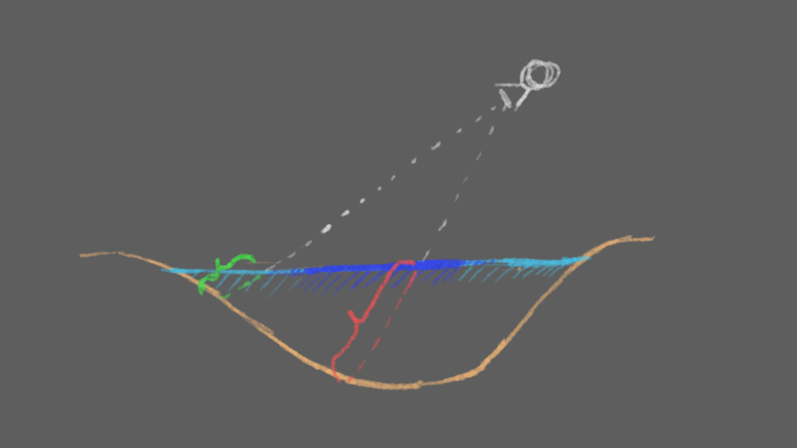
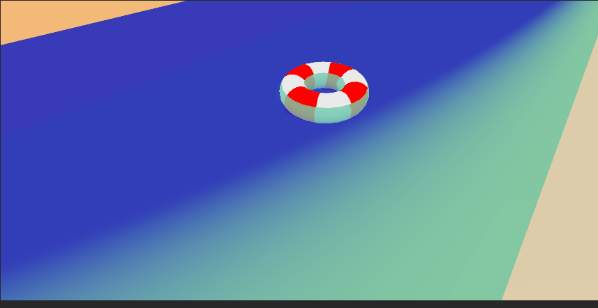
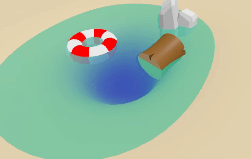

在unity的UPR中实现卡通水体渲染效果。
效果图

效果需求
制作该水体渲染时，为达成效果主要需要制作三个部分：
- 水体深浅变化
- 泡沫（白色海浪）往岸边推进
- 水底折射、扰乱
有了以上三点可以做成一个简单的水体效果。下面开始逐步进行制作。
水体深浅变化
水体深浅变化的过程由深度纹理来实现。通过顶点在屏幕空间中的位置与深度值来计算水深。

最重要的一步：
1 | float depthDifference = existingDepthLinear - i.screenPosition.w; |
得出结果：

再利用lerp来进行颜色的渐变。
1 | float4 depthColor = lerp(_DepthGradientShallow,_DepthGradientDeep,dep_norm); |
最后效果：

水底扭曲效果
由于做的是非真实感绘制，也不需要多逼真的折射效果，就做一般的扭曲效果就行了。
扭曲效果制作非常简单，本质上是偏移UV，以产生扭曲的结果。因此需要输入一张噪声图。
在Unity的Build-in渲染管线下可以在合适的时机使用GrabPass截图，但是在URP管线下没有GrabPass了，想要获取截图只有_CameraColorTexture和_CameraOpaqueTexture
对象渲染完毕后的画面生成在URP可以通过管线设置文件勾选Opaque Texture实现，然后便可在Shader声明_CameraColorTexture调用。_CameraOpaqueTexture是在不透明通道渲染后截图，所以截不到半透明的物体,_CameraColorTexture是在半透明通道渲染后和PostProcessing后截图。

海浪
原理暂时搁置，等有空补充。